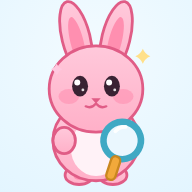
🔍 찾기 놀이터 숨은그림 · 다른그림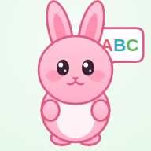
🗣️ 영어 놀이터 토끼에게 물어보면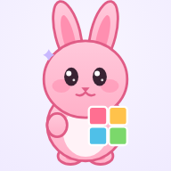
🧩 픽셀 놀이터 숫자 픽셀을 쓱쓱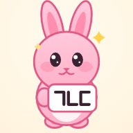
🌟 한글 놀이터 ㄱㄴㄷ 소리 · 따라쓰기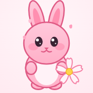
🌸 일본어 놀이터 あいうえお 소리 · 따라쓰기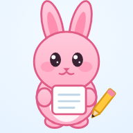
✍️ 글씨 놀이터 펜슬로 따라 쓰고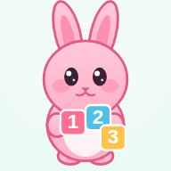
🔢 산수 놀이터 숫자 따라 쓰고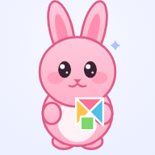
🔷 도형 놀이터 조각을 끌어다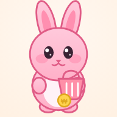
🛒 시장 놀이터 손님 주문 듣고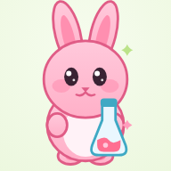
🧪 색깔 실험실 물감을 섞으면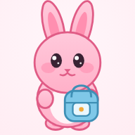
🎒 생각 놀이터 본보기 보고 맞추기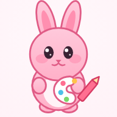
🎨 색칠공부 밑그림을 보고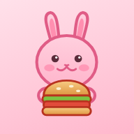
🍔 햄버거 가게 미션 카드 순서대로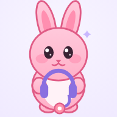
🎙️ 프랙티카 놀이터 AI 튜터와 영·일·중 대화